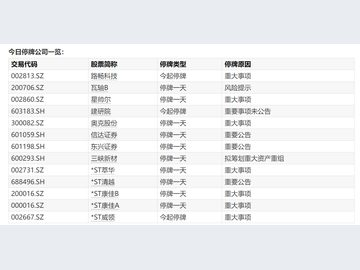
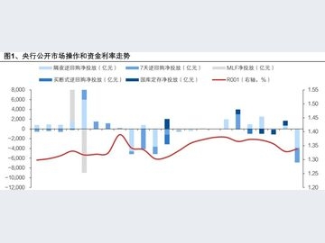

02
三季度末普惠型小微企业贷款余额同比增长6.4%
新华社北京11月20日电（记者张千千）国家金融监督管理总局11月20日发布的数据显示，三季度末，银行业金融机构普惠型小微企业贷款余额38.8万亿元…

会议共审议10件法律草案和决定草案，通过其中5件。新制定的检察公益诉讼法，深入总结检察公益诉讼实践经验，将这一独具中国特色的公益司法保护制度法治化、规范化…
新华社北京11月20日电（记者张千千）国家金融监督管理总局11月20日发布的数据显示，三季度末，银行业金融机构普惠型小微企业贷款余额38.8万亿元…
主要政策利率切换为隔夜逆回购利率之后，贷款市场报价利率（LPR）迎来首次报价。市场普遍关注，在银行加点未变的情况下，这一新的利率基准…
11月20日，金融监管总局发布的最新监管指标数据显示，商业银行净息差继续呈现筑底态势。截至今年三季度末，行业净息差为1.41%，较上季度末略有回升。

日前，工商银行、农业银行、中国银行、建设银行、交通银行、邮储银行等召开会议，传达学习党的二十届五中全会精神，研究部署贯彻落实举措。
临近年末，银行备战“开门红”又开始了。观察各家今年的动作，能感到有一些不同：讲“多放多少贷款”的少了，讲“客户怎么留得住、服务怎么做得更细”的多了。
眼下，普湾经济区科创产业项目、金普新区市政道路工程、小窑湾教育扩建民生工程同步抢抓施工黄金期，聚焦产业赋能、交通提质、教育惠民，以实打实的建设成效…
好消息从全省各地接踵而至。在沈阳，首款国产新世代BMW iX3在宝马沈阳生产基地正式投产并启动交付；
央行公开市场开展3795亿元隔夜逆回购操作，操作利率1.25%。Wind数据显示，今日10675亿元逆回购到期。

11月16-20日，短端投放配合税期流动性需求，资金波动有限，税期后明显转松。全周来看， R001周均值较前周下行1.8bp至1.35%…
